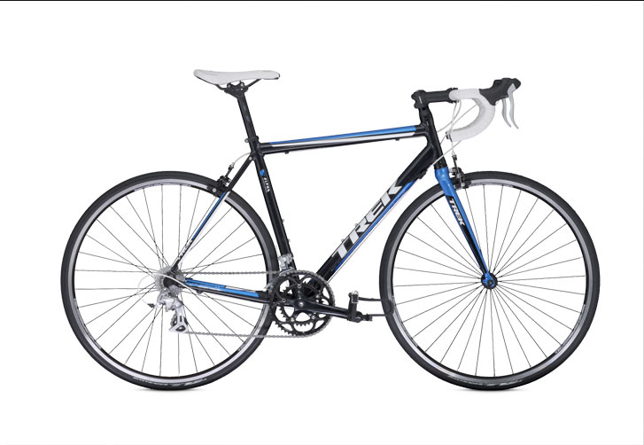

1.1C

Specification
Frameset
Sizes : 47, 50, 52, 54, 56, 58, 60, 62cm
Frame : 100 Series Alpha Aluminum
Fork : Trek aluminum road
Frame fit : H2
Drivetrain
Shifters : Shimano 2300 STI, 8 speed
Front Deraileur : Shimano 2300, 34.9mm clamp
Rear Deraileur : Shimano 2300
Crankset : Vuelta Corsa, 50/34 (compact)
Cassette : Sun Race CSR86 12-25, 8 speed
Pedals : Nylon body w/alloy cage
Wheels
Wheels : Alloy hubs w/Bontrager Approved alloy rims
Tires : Bontrager T1, 700x23c
Components MRP: Rs.41,500/-
Saddle : Bontrager Affinity 1, steel rails
Seat Post : Bontrager SSR, 12mm offset
Handlebar : Bontrager SSR VR-C, 26.0mm
Stem : Bontrager Sport, 26.0mm, 10 degree
Headset : 1-1/8" semi-cartridge bearings
Brakeset : Alloy dual-pivot brakes w/Shimano 2300 STI lever
Extras
Front Wheel & Seat post with QR